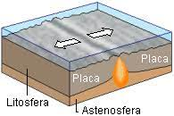

Relación entre vulcanismo y las placas tectónicas
Límites de placa divergentes
En las crestas oceánicas medias, dos placas tectónicas divergen entre sí a medida que se forma una nueva corteza oceánica por el enfriamiento y la solidificación de la roca fundida caliente. Debido a que la corteza es muy delgada en estas crestas debido al tirón de las placas tectónicas, la liberación de presión conduce a la expansión adiabática (sin transferencia de calor o materia) y al derretimiento parcial del manto, causando volcanismo y creando una nueva corteza oceánica. La mayoría de los límites de placas divergentes se encuentran en el fondo de los océanos; por lo tanto, la mayor parte de la actividad volcánica en la Tierra es submarina, formando un nuevo fondo marino. Los fumadores negros (también conocidos como respiraderos de aguas profundas) son evidencia de este tipo de actividad volcánica. Donde la cresta oceánica media está sobre el nivel del mar, se forman islas volcánicas; Por ejemplo, Islandia.
Placas convergentes
Las zonas de subducción son lugares donde chocan dos placas, generalmente una placa oceánica y una placa continental. En este caso, la placa oceánica se subduce, o se sumerge, debajo de la placa continental, formando una trinchera oceánica profunda en alta mar. En un proceso llamado fusión de flujo, el agua liberada de la placa subductora reduce la temperatura de fusión de la cuña del manto suprayacente, creando así magma. Este magma tiende a ser extremadamente viscoso debido a su alto contenido de sílice, por lo que a menudo no alcanza la superficie sino que se enfría y solidifica en profundidad. Cuando llega a la superficie, sin embargo, se forma un volcán. Ejemplos típicos son el Monte Etna y los volcanes en el Anillo de Fuego del Pacífico.